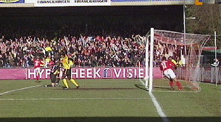
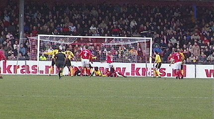
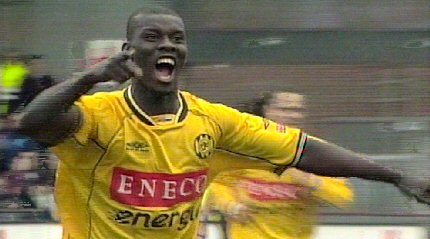
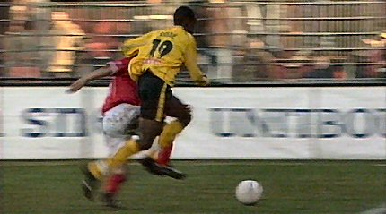
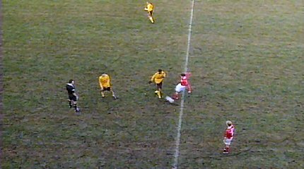
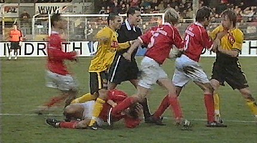
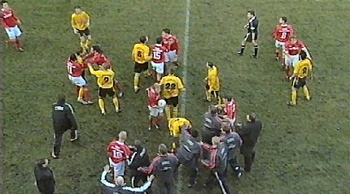
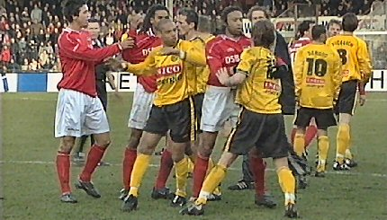
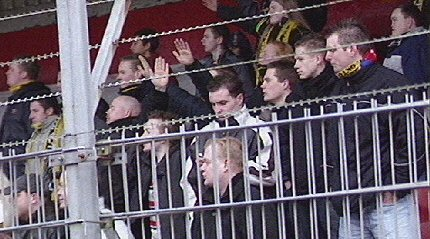

|
AZ - Roda JC (1-1) 20 februari 2005 |
AZ -
Roda JC (1-1) 20 februari 2005

De Cler heeft 1-0 gescoord (27').

Na een vrije trap van Van Dijk ontstaat er een scrimmage voor het
doel van
Timmer waaruit Kah de gelijkmaker over de doellijn frommelt: 1-1 (33').

Kah is blij.

Cissé deelt een elleboog(je) uit en krijgt daarvoor geel.

In de slotfase hindert Cissé bij het nemen van een snel en sluw
genomen
vrije trap door Opdam. Daarvoor krijgt hij een tweede gele kaart van de
kinderachtige scheidsrechter Van Sichem.

Van Dijk ergert zich aan de onsportieve Opdam en werkt hem tegen
de vlakte.

De zaak escaleert en er ontstaat een enorme opstoot.

Van Dijk en de Cler krijgen rood. De laatste minuten van de
wedstrijd speelt
Roda derhalve met negen man tegen tien van AZ. Het blijft 1-1.

Groeten uit concentratiekamp Alkmaarderhout.